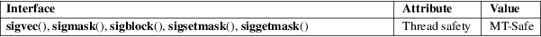

sigvec, sigblock, sigsetmask, siggetmask, sigmask − BSD signal API
Standard C library (libc, −lc)
#include <signal.h>
[[deprecated]]
int sigvec(int sig, const struct sigvec
*vec,
struct sigvec *ovec);
[[deprecated]] int sigmask(int signum);
[[deprecated]]
int sigblock(int mask);
[[deprecated]] int sigsetmask(int mask);
[[deprecated]] int siggetmask(void);
Feature Test Macro Requirements for glibc (see feature_test_macros(7)):
All functions
shown above:
Since glibc 2.19:
_DEFAULT_SOURCE
glibc 2.19 and earlier:
_BSD_SOURCE
These functions are provided in glibc as a compatibility interface for programs that make use of the historical BSD signal API. This API is obsolete: new applications should use the POSIX signal API (sigaction(2), sigprocmask(2), etc.).
The sigvec() function sets and/or gets the disposition of the signal sig (like the POSIX sigaction(2)). If vec is not NULL, it points to a sigvec structure that defines the new disposition for sig. If ovec is not NULL, it points to a sigvec structure that is used to return the previous disposition of sig. To obtain the current disposition of sig without changing it, specify NULL for vec, and a non-null pointer for ovec.
The dispositions for SIGKILL and SIGSTOP cannot be changed.
The sigvec structure has the following form:
struct sigvec {
void (*sv_handler)(int); /* Signal disposition */
int sv_mask; /* Signals to be blocked in handler */
int sv_flags; /* Flags */
};
The sv_handler field specifies the disposition of the signal, and is either: the address of a signal handler function; SIG_DFL, meaning the default disposition applies for the signal; or SIG_IGN, meaning that the signal is ignored.
If sv_handler specifies the address of a signal handler, then sv_mask specifies a mask of signals that are to be blocked while the handler is executing. In addition, the signal for which the handler is invoked is also blocked. Attempts to block SIGKILL or SIGSTOP are silently ignored.
If
sv_handler specifies the address of a signal handler,
then the sv_flags field specifies flags controlling
what happens when the handler is called. This field may
contain zero or more of the following flags:
SV_INTERRUPT
If the signal handler interrupts a blocking system call, then upon return from the handler the system call is not restarted: instead it fails with the error EINTR. If this flag is not specified, then system calls are restarted by default.
SV_RESETHAND
Reset the disposition of the signal to the default before calling the signal handler. If this flag is not specified, then the handler remains established until explicitly removed by a later call to sigvec() or until the process performs an execve(2).
SV_ONSTACK
Handle the signal on the alternate signal stack (historically established under BSD using the obsolete sigstack() function; the POSIX replacement is sigaltstack(2)).
The sigmask() macro constructs and returns a "signal mask" for signum. For example, we can initialize the vec.sv_mask field given to sigvec() using code such as the following:
vec.sv_mask =
sigmask(SIGQUIT) | sigmask(SIGABRT);
/* Block SIGQUIT and SIGABRT during
handler execution */
The sigblock() function adds the signals in mask to the process’s signal mask (like POSIX sigprocmask(SIG_BLOCK)), and returns the process’s previous signal mask. Attempts to block SIGKILL or SIGSTOP are silently ignored.
The sigsetmask() function sets the process’s signal mask to the value given in mask (like POSIX sigprocmask(SIG_SETMASK)), and returns the process’s previous signal mask.
The siggetmask() function returns the process’s current signal mask. This call is equivalent to sigblock(0).
The sigvec() function returns 0 on success; on error, it returns −1 and sets errno to indicate the error.
The sigblock() and sigsetmask() functions return the previous signal mask.
The sigmask() macro returns the signal mask for signum.
See the ERRORS under sigaction(2) and sigprocmask(2).
For an explanation of the terms used in this section, see attributes(7).

None.
sigvec()
sigblock()
sigmask()
sigsetmask()
4.3BSD.
siggetmask()
Unclear origin.
sigvec()
Removed in glibc 2.21.
On 4.3BSD, the signal() function provided reliable semantics (as when calling sigvec() with vec.sv_mask equal to 0). On System V, signal() provides unreliable semantics. POSIX.1 leaves these aspects of signal() unspecified. See signal(2) for further details.
In order to wait for a signal, BSD and System V both provided a function named sigpause(3), but this function has a different argument on the two systems. See sigpause(3) for details.
kill(2), pause(2), sigaction(2), signal(2), sigprocmask(2), raise(3), sigpause(3), sigset(3), signal(7)